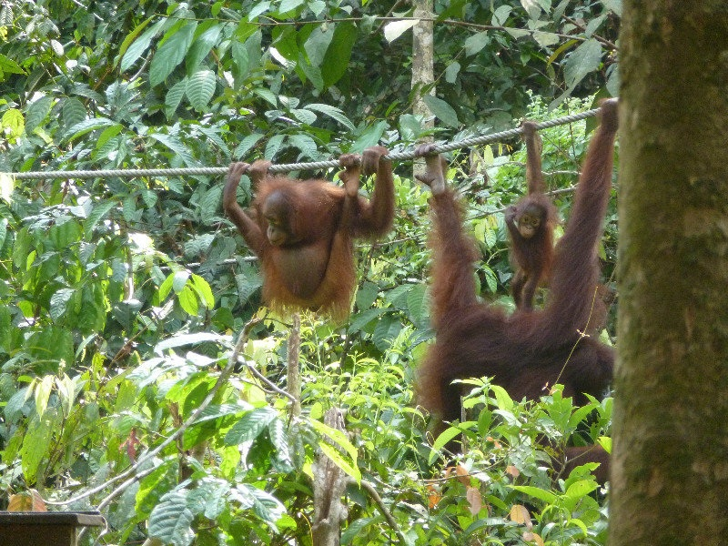
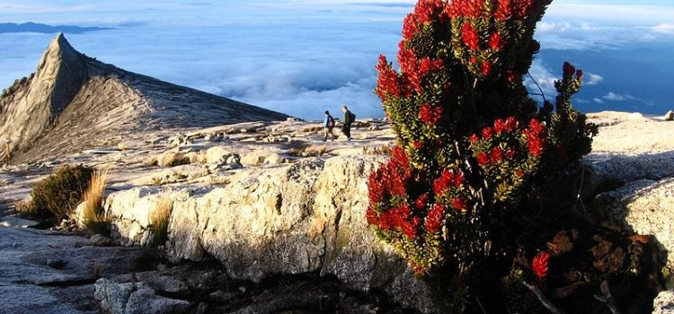

Giải đáp lý do tại sao bạn nên ghé thăm Malaysia
Malaysia là quốc gia du lịch nổi tiếng, và là một trong
Malaysia là quốc gia du lịch nổi tiếng, và là một trong những điểm đến nổi tiếng ở Đông Nam Á. Dưới đây là 15 lý do tại sao bạn nên tham gia tour Malaysia cùng Chuông Vàng tourist nhé.
Đa dạng văn hóa
văn hóa MalaysiaNhiều thế kỷ qua, Malaysia là nơi sinh sống của các dân tộc Châu Á, tạo nên các nền văn hóa đa dạng. Đặc biệt, các nền văn hóa được pha trộn một cách hài hòa, tạo thành bản đồ sống tuyệt đẹp.
Đa dạng tôn giáo
Đa dạng văn hóa
văn hóa MalaysiaNhiều thế kỷ qua, Malaysia là nơi sinh sống của các dân tộc Châu Á, tạo nên các nền văn hóa đa dạng. Đặc biệt, các nền văn hóa được pha trộn một cách hài hòa, tạo thành bản đồ sống tuyệt đẹp.
Đa dạng tôn giáo

Sự hợp nhất của các nền văn hóa và chủng tộc mang đến các tôn giáo khác nhau, khiến cho cảnh quan Malaysia vô cùng thú vị với sự ảnh hưởng của Hồi giáo, Ấn Độ giáo, và Phật giáo. Đáng chú ý nhất là ngôi đền trong Hang động Batu, đền thờ Hindu dành riêng cho Chúa Murugan.
Món ăn kiểu lục địa
Với các nền văn hóa đa dạng, ẩm thực của Malaysia vô cùng độc đáo và đặc sản địa phương của họ đã trở thành một trong những điểm nhấn của chuyến du lịch Malaysia. Tại đây, bạn có thể thưởng thức ẩm thực địa phương với hương vị từ khắp nơi trên thế giới. Do đó, bạn hoàn toàn có thể thưởng thức bữa sáng kiểu Ấn Độ, bữa trưa Nyonya và bữa tối kiểu Hàn Quốc.
Sự phát triển không ngừng
Trong khi Kuala Lumpur được ca ngợi là thành phố hàng đầu, thì các khu vực xung quanh nơi đây còn khá truyền thống, tạo ra khung cảnh cổ kính và hiện đại. Các tòa nhà hiện đại và nổi tiếng được thiết kế theo nét kiến trúc truyền thống của Malaysia. Phần lớn cảnh quan của Malaysia đều tương đồng và đang chuyển đổi từ cổ kính sang hiện đại.
Truyền thống lâu đời
Mặc dù người dân Malaysia rất hiện đại, nhưng hầu hết mọi người đều tuân thủ truyền thống gia đình và cộng đồng. Nếu cẩn thận quan sát, bạn có thể thấy rằng nét truyền thống của Malaysia vẫn còn hiện hữu trong thực tế, chẳng hạn như cầu nguyện trước bữa ăn, hoặc người trẻ mời người lớn tuổi trước khi ăn.
Khu rừng nhiệt đới

khu bao ton SepilokMalaysia sở hữu những khu rừng nhiệt đới lâu đời nhất thế giới, cổ xưa hơn cả những khu rừng Amazon. Hòn đảo Borneo hùng vĩ cũng là một phần của Malaysia, có Sabah và Sarawak. Bán đảo Malaysia bảo tồn các nét đẹp tự nhiên hoang sơ và có khu vực leo núi.
Đa ngôn ngữ
Lắng nghe cuộc trò chuyện của người Malaysia là một trong những điều thú vị nhất, vì hầu hết người dân địa phương đều có thói quen nói tất cả các ngôn ngữ mà họ biết khi nói chuyện. Họ thường nói tiếng mẹ đẻ, kết hợp với các thuật ngữ tiếng Anh và tiếng Mã Lai.
Hàng hóa giá rẻ
Một trong những điểm hấp dẫn của Malaysia là hàng hóa giá rẻ, như các loại thực phẩm, quần áo, đồ trang sức,… Đặc biệt, các khu chợ được mở cửa cả ngày lẫn đêm, là nơi du khách có thể trải nghiệm cuộc sống hàng ngày của người dân Đông Nam Á. Tại đây, du khách có thể mua sắm mọi thứ với giá cả phải chăng.
Khí hậu nhiệt đới
Vì nằm ngay trên đường xích đạo, Malaysia có khí hậu nhiệt đới – là sự pha trộn của nhiệt độ cao và các cơn mưa đột ngột. Mặc dù kiểu thời tiết này khá khó chịu, nhưng đây lại là một trong những đặc trưng riêng của đất nước. Ngoài ra, du khách có thể khám phá các cảnh quan của khí hậu Malaysia: từ thời tiết nắng nóng của rừng nhiệt đới, khí hậu mát mẻ ở Cao nguyên Cameron đến thời tiết tuyệt đẹp trên bãi biển.
Di sản thiên nhiên

Bạn có thể tìm thấy các tác phẩm tự nhiên hấp dẫn nhất thế giới ở biên giới Malaysia, đặc biệt là Núi Kinabalu ở Sabah, và dãy thạch anh Quartz Ridge ở Klang. Đây là địa điểm cực kỳ phổ biến cho những người đi bộ đường dài và leo núi từ khắp nơi trên thế giới.
Động vật hoang dã độc nhất vô nhị
Rừng rậm Malaysia là nơi sinh sống của một số loài động vật hoang dã kỳ lạ và thú vị nhất mà bạn không thể tìm thấy ở bất kỳ nơi nào khác. Các bạn có thể lạc vào xứ sở của bộ phim tài liệu về thiên nhiên ở Borneo bằng cách khám phá những khu rừng mưa và tìm kiếm những con vật lạ mà bạn chưa từng thấy trên truyền hình như lợn vòi, cầy mực, và tê tê. Đặc biệt, bạn có thể ghé thăm Vườn thú Quốc gia hoặc các khu bảo tồn động vật để tìm hiểu thêm về hệ thực vật và động vật địa phương từ các chuyên gia và nhà bảo tồn.
Di sản được UNESCO công nhận
Vì phần lớn Malaysia là nơi sinh sống của những người dân buôn bán và những người nhập cư từ khắp nơi trên thế giới từ những năm 1800, nên không có gì ngạc nhiên khi các thị trấn vẫn còn những tàn dư văn hóa trong các công trình kiến trúc. Penang và Malacca đặc biệt nổi tiếng với việc bảo tồn các tòa nhà lịch sử và được UNESCO công nhận là Di sản thế giới để bảo vệ các di tích của quá khứ cho các thế hệ tương lai.
Nghệ thuật đa văn hóa
Sự đa dạng văn hóa của Malaysia được thể hiện rõ nét trong phong cách nghệ thuật và kỹ thuật từ khắp các quốc gia ở Châu Á, tạo ra sự khác biệt về kiến trúc, thời trang và ẩm thực. Các kiệt tác kiến trúc nổi bật của Malaysia là Peranakan, và Baba-Nyonyan.
Các lễ hội được tổ chức quanh năm
Với vô số các nền văn hóa và tôn giáo khác nhau, Malaysia nổi tiếng với các lễ hội rực rỡ sắc màu quanh năm. Đây là những sự kiện đặc trưng, bạn nên trải nghiệm khi tới Malaysia.
Các hòn đảo
Các hòn đảo xinh đẹp trải dài tất cả các vùng Đông Nam Á, và Malaysia có những hòn đảo riêng, độc đáo ở phía bắc. Các bờ biển phía tây của Penang, Langkawi nổi tiếng là một trong những địa điểm tham quan hàng đầu ở Châu Á và các hòn đảo phía đông như Redang, Perhentian nổi tiếng với các môn thể thao dưới nước.